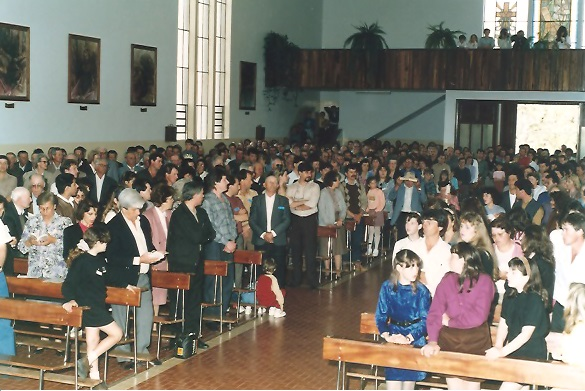
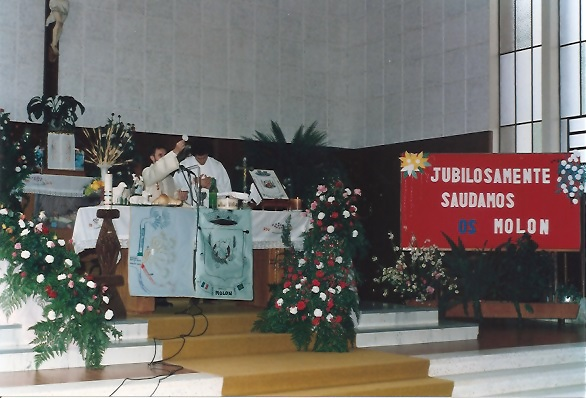
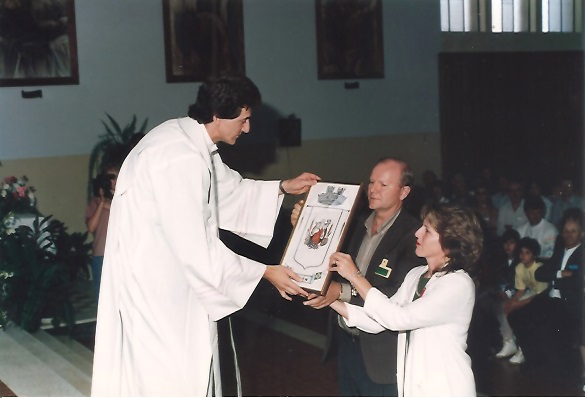
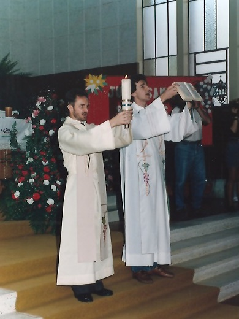
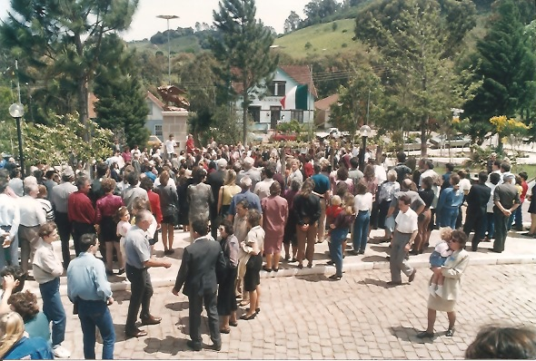
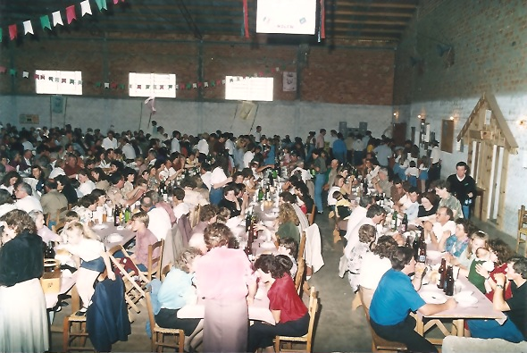
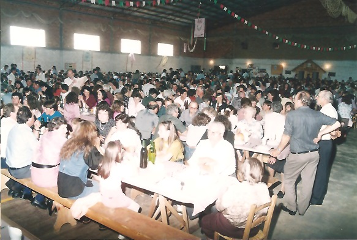

1º Encontro - 1991
12 e 13 de outubro - Otávio Rocha - Flores da Cunha/RS
Em 10/06/1991, foi encaminhado uma correspondência a dezenas de pessoas com os sobrenomes Molon, recolhidas nas listas telefônicas, nos seguintes termos:
"Há vários anos temos nos dedicado à pesquisa sobre a família Molon. Através de depoimentos e mesmo documentação recebida da Itália conseguimos criar uma árvore genealógica de um ramos que teve origem na cidade de Arzignano, Província de Vicenza. Estamos aguardando mais dados daquela comunidade.
Com objetivo de congregar a família Molon estamos organizando para os dias 12 e 13/l0/9l, o primeiro encontro, que seria realizado em Otávio Rocha, no Município de Flores da Cunha, 15 km de Caxias do Sul. Foi neste local que em 1882 chegaram os primeiros imigrantes Molon, dando origem a uma longa descendência, superior a 2.000 pessoas, espalhadas hoje por todo o País.
Não sabemos se V.Sa. é parte deste ramo. Pelas pesquisas, no entretanto, todos os Molon, são parentes ente si, havendo algumas alterações na escrita para Mollon, com dois "eles".
Estamos aguardando um retorno, encaminhando-nos algum material histórico - nome dos pais, avós, tartaravós..., local de origem e, se possível, a divulgação para outros "Molon" da região ou parentes, sobre a nossa festa de Out./91.
Com o lema "CATARSE FIM QUE SEMO VIVI" foi posteriormente encaminhada uma correspondência circular nos endereços disponíveis, nos seguintes termos:
"Em nome da Comissão Organizadora do 1º Encontra da Família Molon temos a satisfação de convidar o prezado amigo e família para participarem da nossa festa. Desejamos promover um encontro de todos os descendentes Molon e de seus familiares, com a seguinte programação:
Dia 12/10(sábado) - feriado de N.S. Aparecida.
Recepção aos que vieram de outras cidades. Inscrições, acomodação em casa de parentes ou Hotel. "Filó´" à noite, para contar causos, cantos, montagem da exposição de documentos, fotos, objetos e árvore genealógica.
Dia 13/10 (domingo)
10 horas - Missa oficiada por Frei Moacir Molon e Pe. Olavo Molon Bombardelli, na Igreja Matriz de Otávio Rocha.
11 horas - Apresentação da árvore genealógica. Manifestações diversas.
12 horas - Almoço de confraternização, regado com Vinhos Molon e Sinuelo. Sorteio de brindes, apresentações artísticas e outras atrações."
Caderno Especial do Correio Riograndense
Por ocasião do 1º Encontro o Jornal "Correio Riograndense", de Caxias do Sul, editou um suplemento especial. O trabalho foi apresentado da seguinte forma: " CATERSE FIN QUE SEMO VIVI - A Família Molon, do Brasil, reúne-se pela primeira vez, em Otávio Rocha, berço dos pioneiros PIETRO, ALESSANDRO e ANGELO MOLON, chegados de Castel d’Arzignano (Vicenza-Itália) em 1883. Num espaço de pouco mais de um século, cinco gerações têm promovido uma espetacular diversificação de descendentes, que podem ultrapassar os 2.000.
A pequena semente plantada em terras brasileiras germinou fecunda e, ao lado do trabalho agrícola, na indústria, comércio, serviço religioso e nas profissões liberais, a família Molon tem dado uma contribuição generosa ao país que a adotou.
Ao lado deste tronco mais expressivo, há registros de outros imigrantes Molon, que aos poucos se procurará identificar. O Correio Riograndense publica a estrutura básica das três famílias Molon que se desenvolveram a partir de Otávio Rocha...
O entusiasmo encontrado em tantos descendentes da Família Molon faz crer que o encontro poderá repetir-se. Por enquanto, fica a certeza de que o gesto do 1º Encontro frutificará em amizade, congraçamento e maior veneração pelo passado, lembrando aqueles que com muito sacrifício nos legaram uma história de trabalho e de fé."
Mensagens recebidas
Do Prefeito de Arzignano:
"Quero levar as minhas saudações como também de toda a cidade às famílias Molon que se reunen para festejar de forma especial as antigas tradições e os afetuosos vínculos por pertencerem à mesma origem e à mesma terra pátria Itália.
É sem dúvida uma iniciativa louvável que demonstra a vitalidade e a solidariedade existente entre aqueles que por diversos motivos tiveram ou quiseram deixar a terra natal e substituí-la por outros longínquas regiões.
Estas minhas palavras devem servir para fazer sentir a vocês a voz amiga de Arzignano que mudou muito nestes últimos anos, também pela presença de muitos imigrantes e por isso mais próxima a vocês e mais participativa aos acontecimentos de quem se encontra longe de nós.
Faço votos que este encontro são seja um fato esporádico mas que se torne um motivo capaz de proporcionar-lhes alegrias e novas experiências de amizade e fraternidade.
Uno à presente o galardão da cidade de Arzignano para que sirva como um sinal evidente da nossa participação diária à vida de vossa comunidade tão longe mas igualmente presente aos nossos pensamentos.
Cordialemente, Prefeito Paulo Antonio Savegnano.
Do Presidente da Província de Vicenza, em 20/09/1991:
"Respondo com muita satisfação ao seu pedido de fazer chegar a minha calorosa e efetuosa saudação a mais de dois mil descendentes da família Molon e a todos aqueles que na terra brasileira levam adiante o nome desta gloriosa família através da lembrança dos antepassados Giovanni Battista Molon e Domenica Faedo que partiram de Arzignano e Chiampo no ano de 1882.
O nome de vossa família vive nos nossos corações e embora há muitos quilômetros de distância a vossa terra de origem vos lembra, vos considera como filhos, aliás con considera entre os melhores filhos.
Somos orgulhosos de vocês e de tudo aquilo que fizeram e daquilo que irão fazer para cultivar as tradições da vossa terra longínqua e enaltecer o nome da Itália, do Vêneto e de Vicenza como também de tudo aquilo que será feito para fortalecer este vínculos de união.
Sabemos que vos tornastes admiráveis pelo trabalho e graças aos princípios e valores transmitidos pelos vossos pais; sabemos também que por isso sois respeitados e admirados.
A extraordinária família Molon é um exemplo para todos, quer no Brasil como na Itália.
A todos transmito as melhores saudações e os fervorosos augúrios de um grane porvir."
Senador Délio Giacometti., Presidente da Provícia de Vicenza.
Padre Giuseppe Molon - Sidney-Austrália, em 21/09/1991:
.... Fico feliz em pensar que também eu, com minha família, faço parte desta grande árvore e revivio com vocês as etapas emocionantes de um passado, rico de coragem, de fé e de civilização.
Embora me encontre longe de vocês, participo com emoção as celebrações e compartilho espiritualmente os momentos do encontro, da alegria, dos cantos, das históricas, da confraternização religiosa, do calor de tanta amizade e da belíssima descoberta das nossa particulares e seculares características.
Faço votos que a Família Molon ao espelhar-se no passado possa colher a inspiração. a vitalidade de sua origem e projetar com otimismo a riqueza dos seus valores humanos e cristãos, rumo ao próximo milênio para continuar a escrever nas estradas do mundo ( Da Grécia ao Vêneto, do Vêneto às Américas e quem sabe lá até aonde ainda) páginas de verdadeira civilização e progresso."
Outra Mensagem:
"É com grande alegria que celebramos este belíssimo acontecimento, que nos leva a relembrar os entes queridos, que vieram de terras e mares longínquos. Abrindo caminhos, trazendo Fé firme e uma coragem incomparável, tornando-se verdadeiros heróis.
Diante este maravilhoso exemplo deixado a cada um de nós, o que nos resta, no momento presente é de Louvar e Agradecer a Deus, pelos grande benefícios recebidos no decorrer da história traçada. Peçamos a graça para que a Árvore Geneológica da Família Molon, continue sempre unida, transmitindo paz, alegria, fraternidade e partilha. Assim torna a vida bela e feliz. ( Irmãs Justina e Geny Therezinha Molon)
|  |  |  |  |
|  |  |  |
{kind=link}
{kind=link}
{kind=link}
{kind=link}
{kind=link}
{kind=link}
{kind=link}